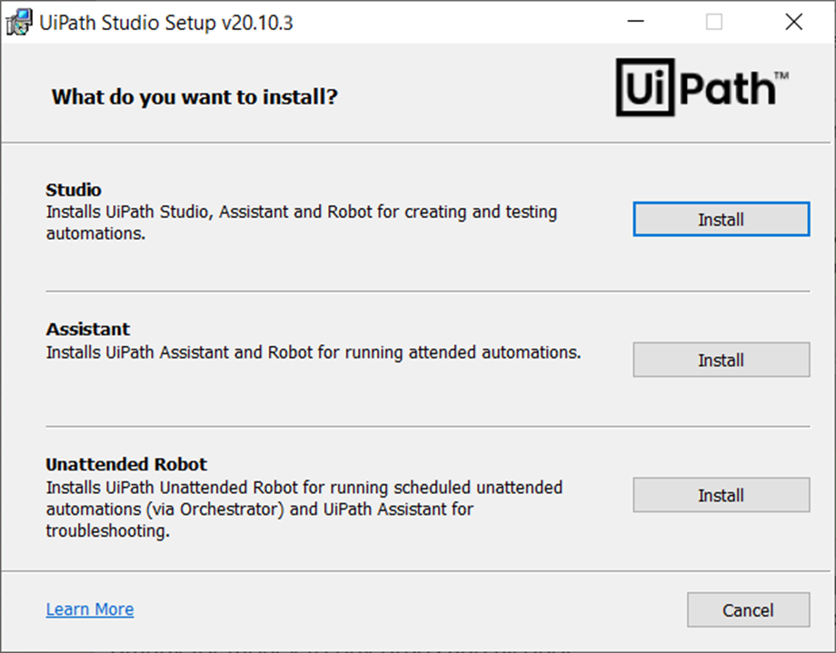
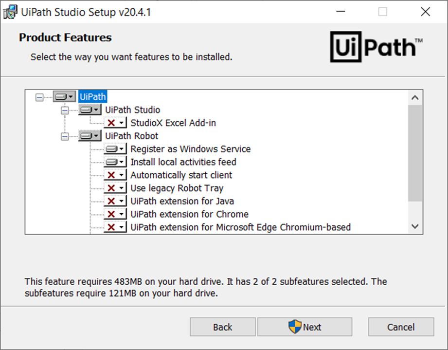
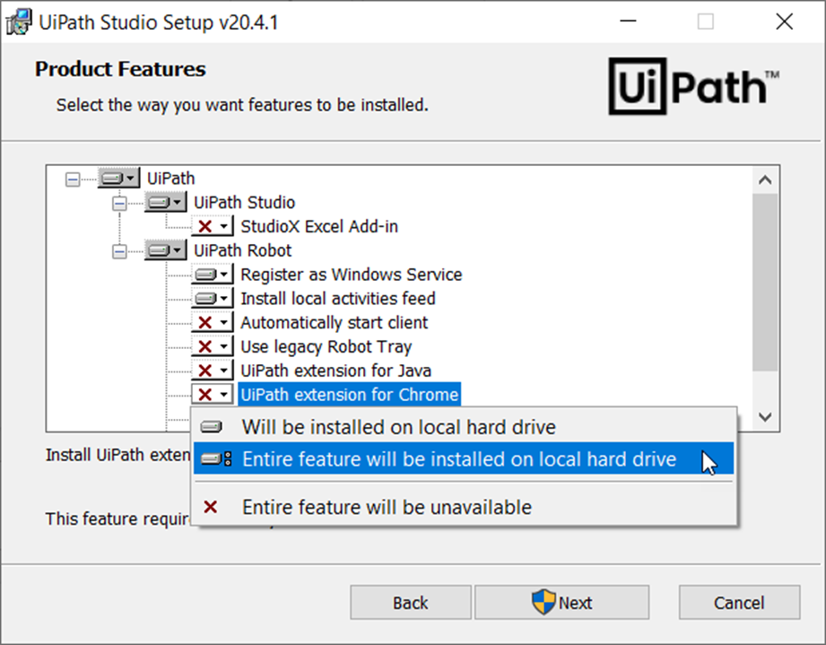
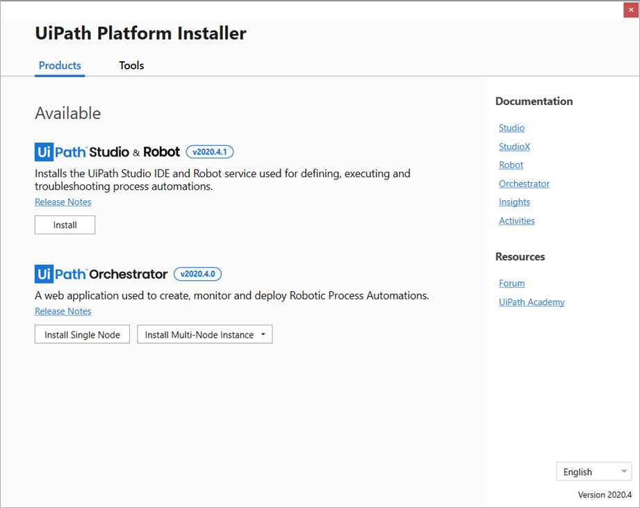
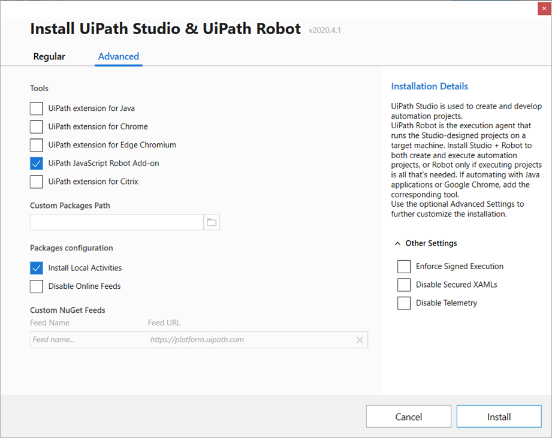

• 1. Se descarga UIPATH y se ejecuta
• 2. Lee y aceptamos los términos de uso
• 3. Seleccionamos que extensiones queremos usar, y que se guarde en el disco local
• 4. Elegimos la versión Robot Studio
• 5. Y luego seleccionamos estos campos, y pulsamos en instalar
